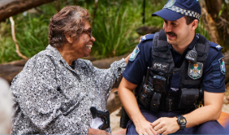
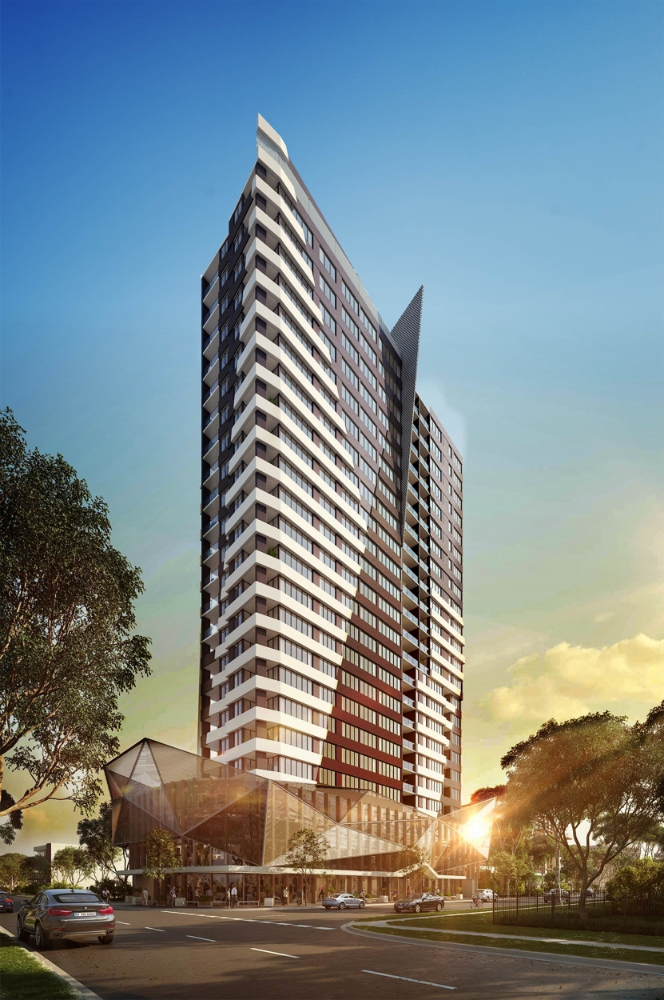
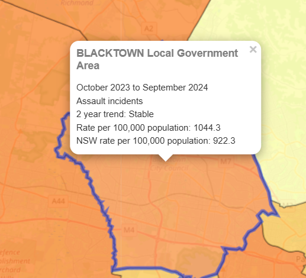

Blacktown Watchdog is a digital crime prevention initiative dedicated to enhancing the safety and security of Blacktown residents.
Our mission is to provide real-time crime updates, safety tips, and a platform for the community to report incidents efficiently.
By bridging the gap between citizens and law enforcement, we aim to create a safer, more informed community where everyone can take proactive steps to prevent crime.
We envision a community where every resident feels safe and empowered. Through transparency, collaboration, and innovative technology, we strive to reduce crime rates and build trust between the people and local authorities. Our goal is to make Blacktown a role model for community-driven crime prevention.
Blacktown Watchdog operates by gathering crime reports, analyzing trends, and sharing crucial safety information with residents. We work closely with law enforcement and local organizations to ensure accurate and up-to-date information is available to the public. Our website provides an easy-to-use platform where individuals can report crimes, access safety resources, and stay informed about local crime trends.
You can play an active role in making Blacktown a safer place. By reporting incidents, sharing safety tips, and spreading awareness, you contribute to a stronger and more vigilant community. Follow us for updates, attend safety workshops, and be part of the change that keeps our neighborhoods secure.